考勤管理
添加考勤
-
【后台】选择左侧【考勤管理-月度统计】菜单，【添加考勤统计】在弹出窗口点击【添加】。
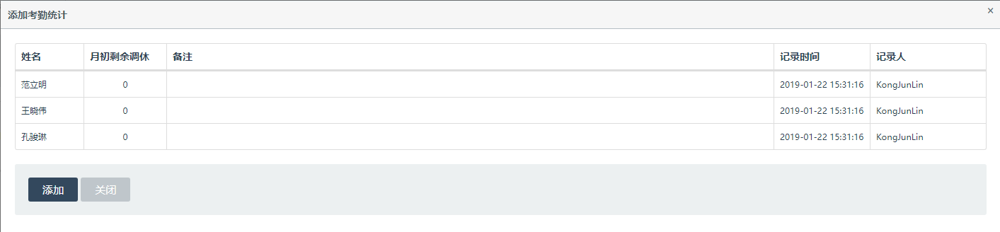
-
【后台】选择左侧【考勤管理-当天考勤】菜单，【添加考勤】选择记录日期，点击【搜索】，即出现所有员工默认考勤时间列表，可根据实际情况修改其考勤情况，确认后点击【添加】。
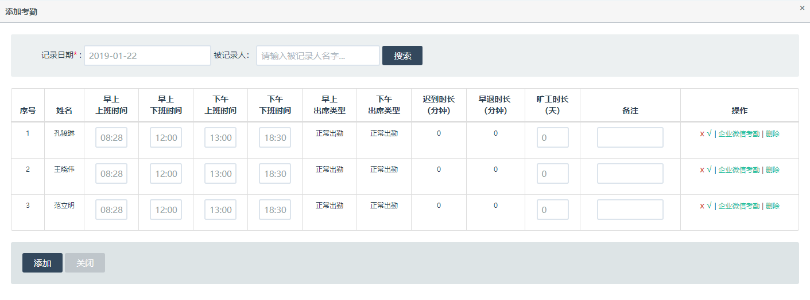
查看考勤
-
【后台】添加考勤完毕后回到【考勤管理-当天考勤】菜单，点击【搜索】，即可看到刚才添加的当天考勤。
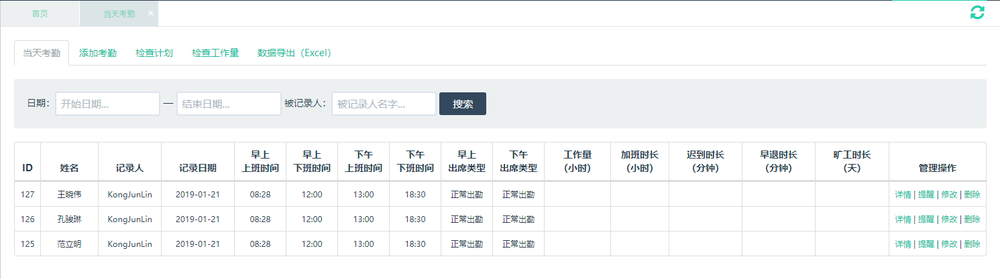
-
【后台】选择左侧【考勤管理-当天考勤】菜单，查看考勤记录，可选择日期及被记录人姓名进行查看。
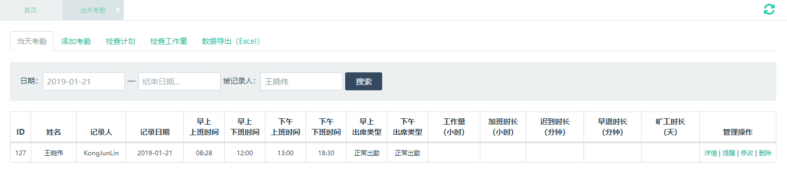
-
【后台】选择左侧【考勤管理-当天考勤】菜单，对需要进行修改或删除的数据点击相关操作，管理员可直接修改考勤，删除考勤需要经过审批方可成功删除。
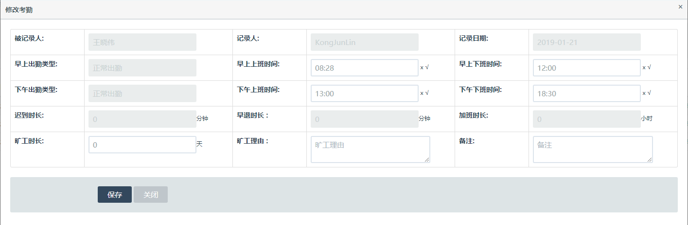
考勤数据导出
-
【后台】选择左侧【考勤管理-当天考勤】菜单，【数据导出】导出当前列表的所有内容，可选择日期及被记录人姓名进行数据导出。
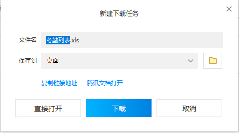
考勤审批
-
【后台】选择左侧【考勤管理-当天考勤】菜单，【考勤审批】选择日期、被记录人、状态及申请类型进行查看。在考勤审批列表中，对需要进行修改或删除的数据点击相关操作，管理员可直接修改考勤，删除考勤需要经过审批方可成功删除。
假期类别
-
【后台】选择左侧【假期管理-类别设置】菜单，【类别设置】中已有假期类别，如需要添加则在【添加假期类型】添加假期类型信息，填写完成点击【添加】。
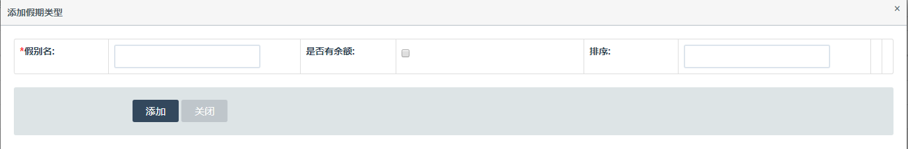
添加假期
-
【后台】选择左侧【假期管理-假期记录】菜单，【添加假期记录】填写假期信息，填写完成点击【添加】。
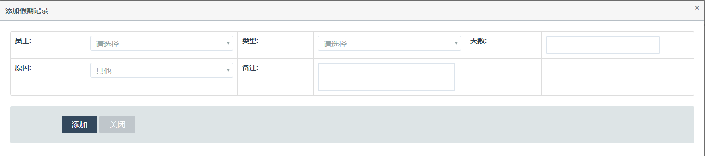
假期查询
-
【移动端】选择【我的-假期】，【统计】中查看假期天数。

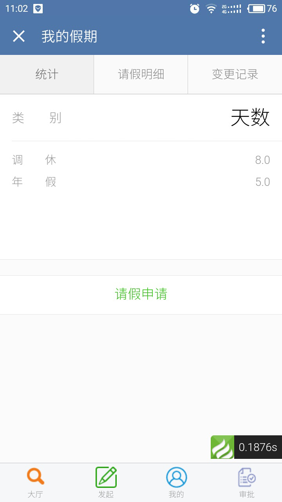
-
【后台】选择左侧【假期管理-假期余额】菜单，【假期统计】可选择被记录人姓名及日期查看假期天数。
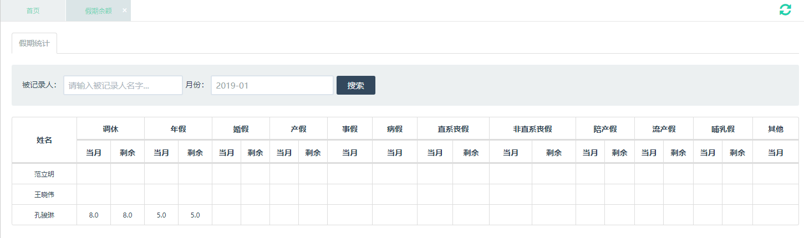
添加请假
-
【移动端】选择【我的-假期】，点击【请假申请】，填写完成点击【提交】。
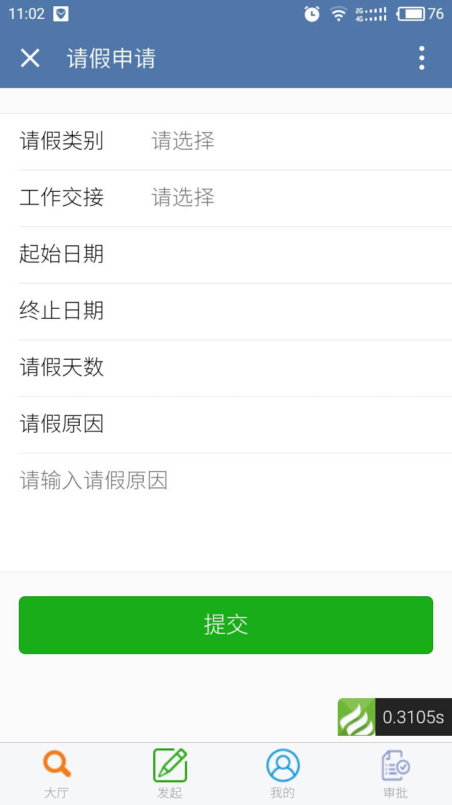
-
【移动端】选择【发起-请假申请】，填写完成点击【提交】。

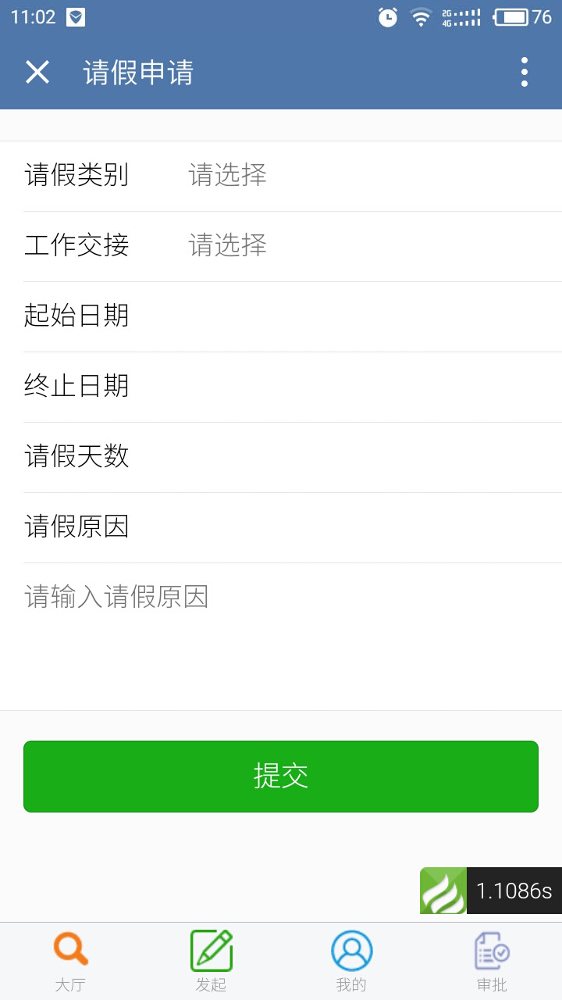
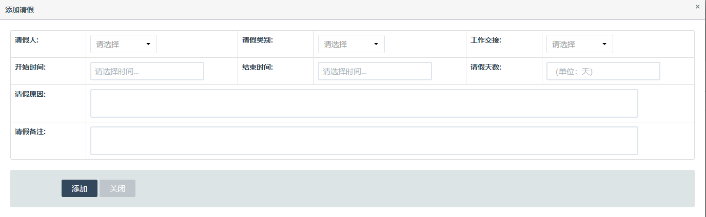
-
【后台】选择左侧【假期管理-请假管理】菜单，【添加请假】填写完成点击【添加】。
请假数据导出
-
【后台】选择左侧【假期管理-请假管理】菜单，【数据导出】导出当前列表的所有内容，可选择日期、姓名及状态进行数据导出。
请假审批
-
【移动端】员工在移动端或管理员再后台提交了添加请假申请后，管理员会收到系统推送消息。打开详情，并且需选择【同意】【驳回】【转审批】其中一项。选择【同意】【拒绝】需要填写批语。
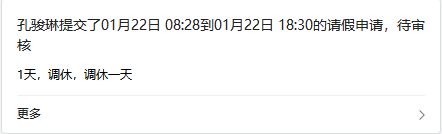
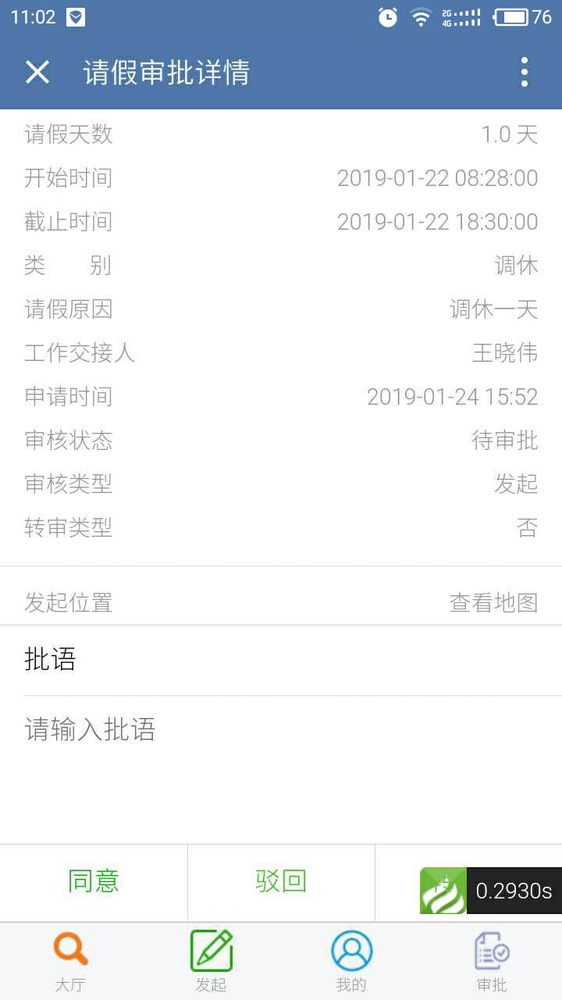
-
【移动端】【转审批】需要选择审批人，点击【转审】，由系统推送消息给新的审批人进行审批。
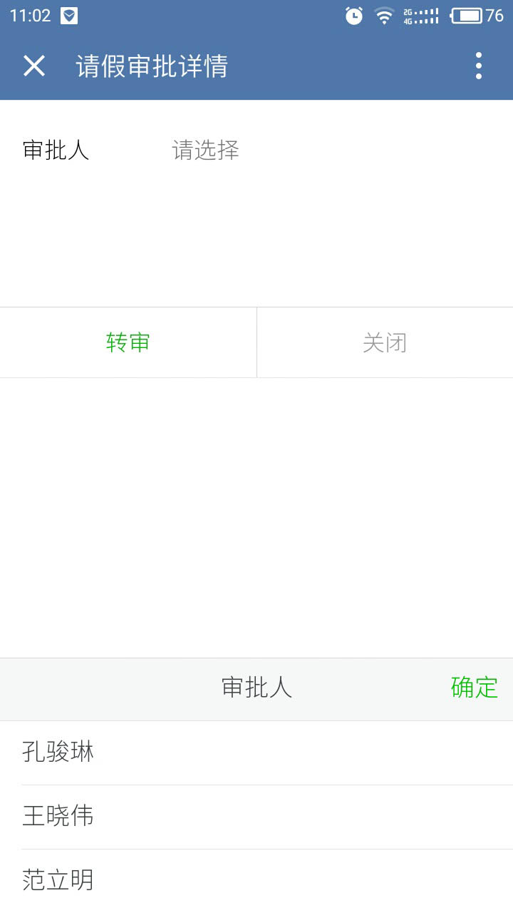
-
【移动端】审批人完成审批后，申请人会收到系统推送消息，以此获知申请是否通过。如申请获得批准，【我的-假期】，【统计】中假期天数会有所变化。
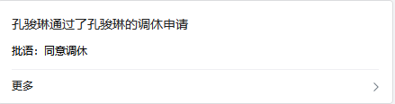
-
选择左侧【假期管理-请假审批】菜单，【请假审批】查看审批信息，可选择日期、姓名、审批类型及状态进行查看。
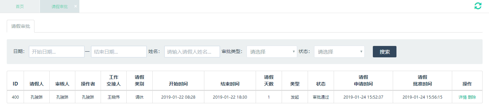 添加加班
添加加班
-
【移动端】选择【发起-加班申请】，填写完成点击【提交】。

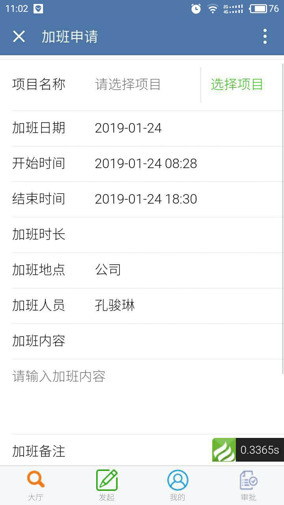
-
【后台】选择左侧【考勤管理-加班管理】菜单，【添加加班】填写完成点击【添加】。
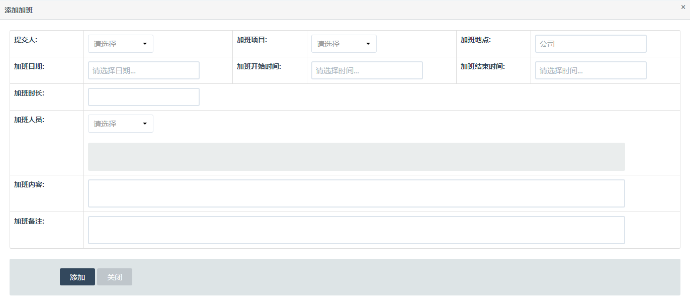
加班数据导出
-
【后台】选择左侧【考勤管理-加班管理】菜单，【数据导出】导出当前列表的所有内容，可选择日期、加班人姓名、加班项目及状态进行数据导出。
加班审批
-
【移动端】员工在移动端或管理员再后台提交了添加加班申请后，管理员会收到系统推送消息。打开详情，并且需选择【同意】【驳回】【转审批】其中一项。选择【同意】【拒绝】需要填写批语。
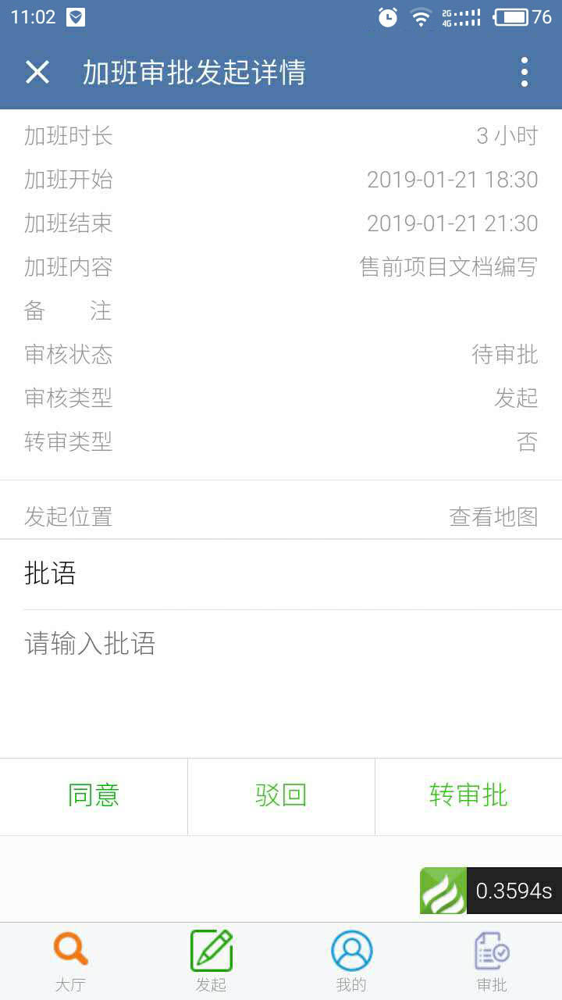
-
【移动端】【转审批】需要选择审批人，点击【转审】，由系统推送消息给新的审批人进行审批。
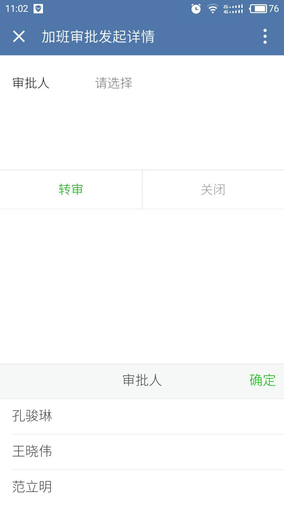
-
【移动端】审批人完成审批后，申请人会收到系统推送消息，以此获知申请是否通过。如申请获得批准，【我的-假期】，【统计】中假期天数会有所变化。
-
【后台】选择左侧【考勤管理-加班审批】菜单，【加班审批】查看审批信息，可选择日期、加班人姓名、加班项目、审批类型及状态进行查看。
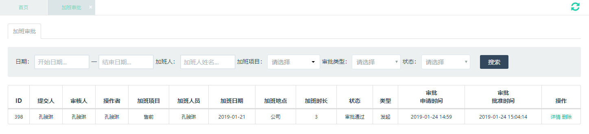
-
选择左侧【考勤管理-加班审批】菜单，查看审批记录，在【操作】中【详情】查看每条记录的详情，【删除】可删除记录。
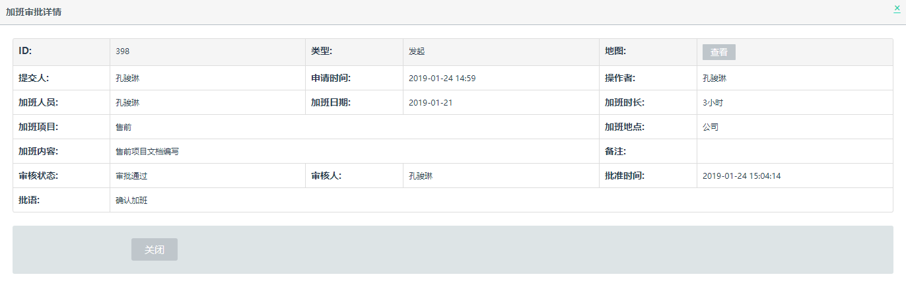
添加外勤
-
【移动端】选择【发起-外勤申请】，填写完成点击【提交】。
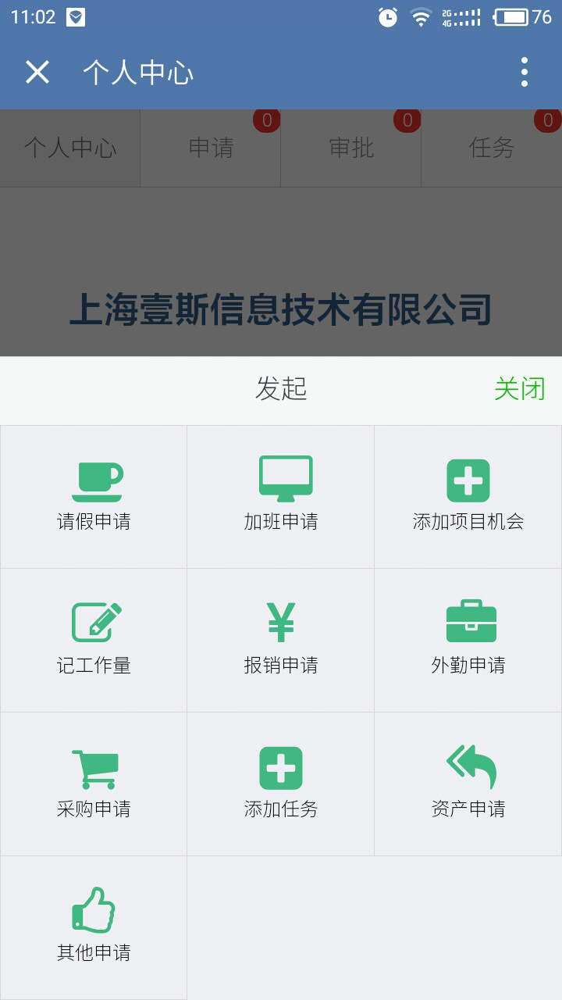
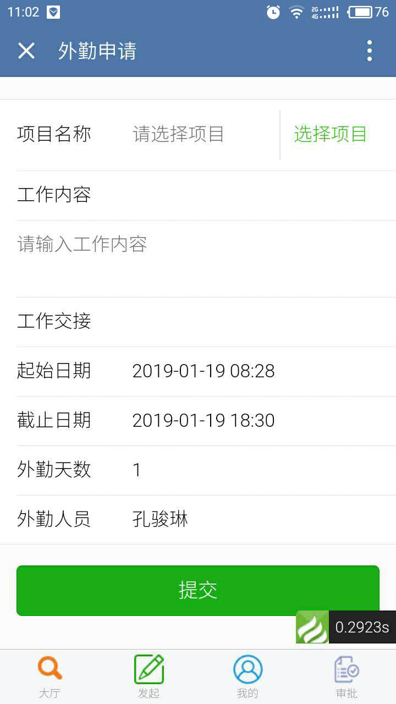
-
【后台】选择左侧【考勤管理-外勤管理】菜单，【添加外勤】填写完成点击【添加】。
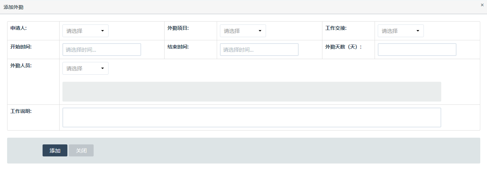
外勤数据导出
-
【后台】选择左侧【考勤管理-外勤管理】菜单，【数据导出】导出当前列表的所有内容，可选择日期、姓名、项目及状态进行数据导出。
外勤审批
-
【移动端】员工在移动端或管理员再后台提交了添加外勤申请后，管理员会收到系统推送消息。打开详情，并且需选择【同意】【驳回】【转审批】其中一项。选择【同意】【拒绝】需要填写批语。
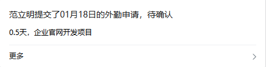

-
【移动端】【转审批】需要选择审批人，点击【转审】，由系统推送消息给新的审批人进行审批。
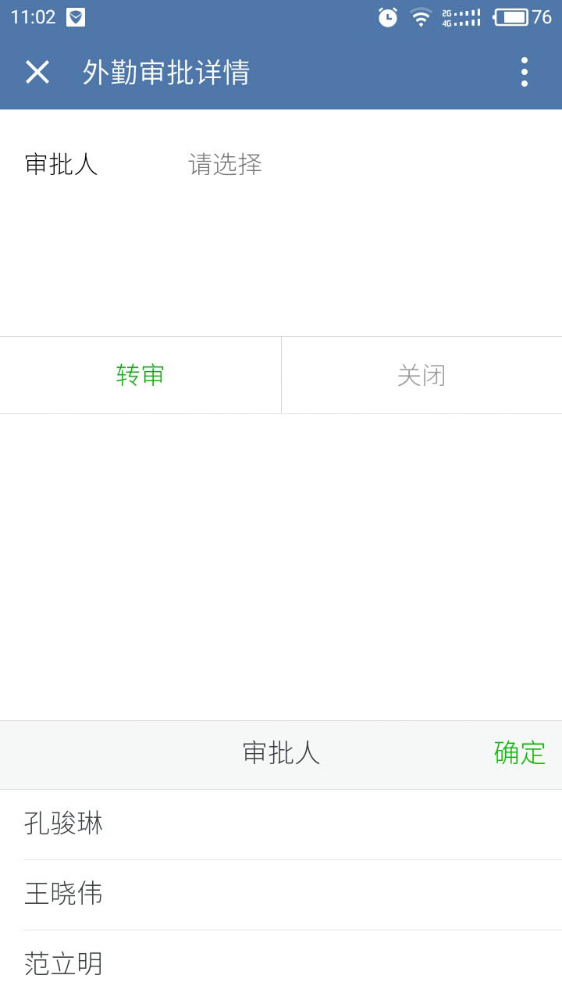
-
【移动端】审批人完成审批后，申请人会收到系统推送消息，以此获知申请是否通过。
考勤记录
-
【后台】选择左侧【考勤管理-考勤记录】菜单，选择工作日期、员工姓名及所属项目进行查看。

考勤修改记录
-
【后台】选择左侧【考勤管理-考勤修改记录】菜单，选择日期、被记录人姓名、状态及申请类型进行查看。
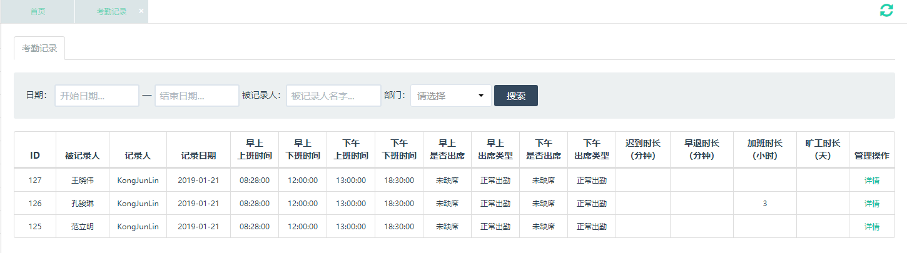
月度统计
-
【后台】选择左侧【考勤管理-月度统计】菜单，在未选择日期及被记录人姓名的情况下，默认列表中显示的是所有记录。选择月份及被记录人姓名进行查看。
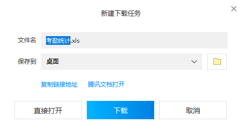
-
【后台】选择左侧【考勤管理-月度统计】菜单，查看最新的统计信息，点击【重新统计本月考勤】，刷新统计列表。
-
【后台】选择左侧【考勤管理-月度统计】菜单，每月考勤结束后，点击【结束本月考勤】，完成本月的考勤工作。
月度统计数据导出
-
【后台】选择左侧【考勤管理-月度统计】菜单，【数据导出】导出当前列表的所有内容，可选择日期、姓名、项目及状态进行数据导出。
假期调整
-
【后台】选择左侧【假期管理-假期调整】菜单，可选择员工姓名进行查看。